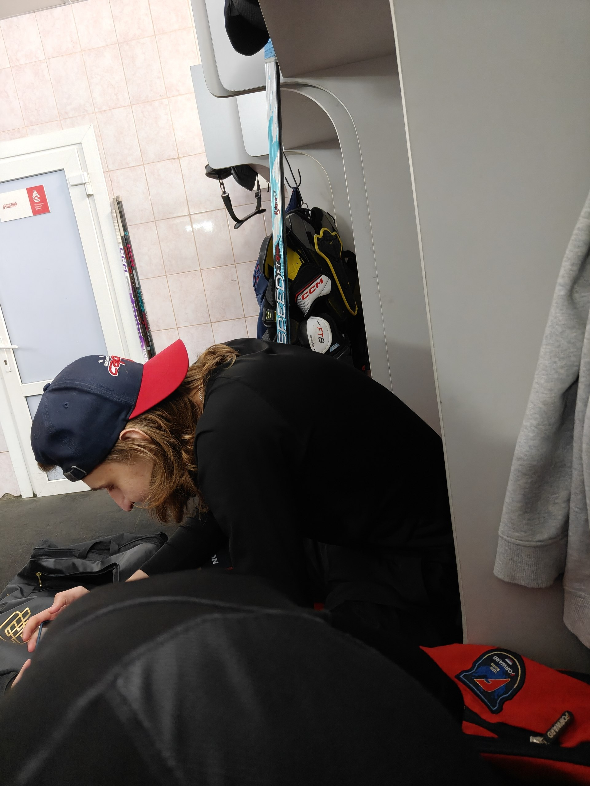
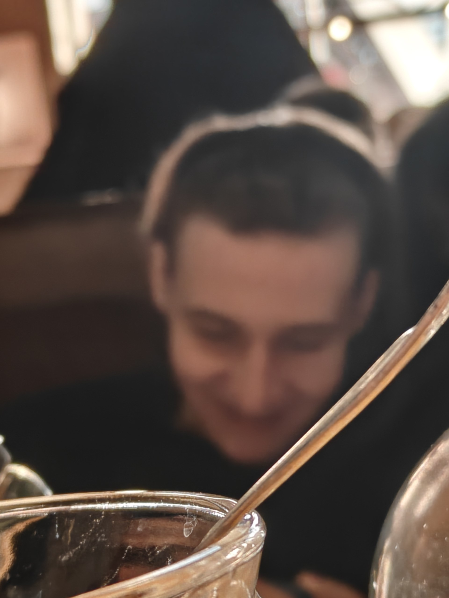

Шуточный сбор для друзей
Операция
«Омлет»
Поможем Паше восстановить запас яиц.
Бедный Паша открыл холодильник и увидел пустой лоток. Теперь его ждёт сложнейшая операция: дойти до магазина и вернуть завтрак.
0 из 12 яицЦель — десяток и два про запас
Яйца виртуальные. Денег не собираем.

Хроника голодного утра


